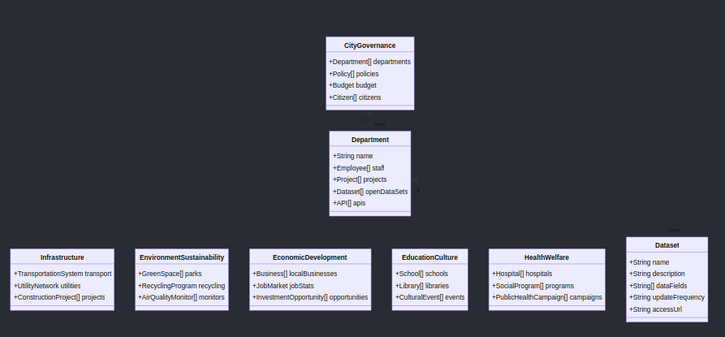

Fort Worth City DAO Whitepaper: Cyber-Resilient Cities in the Information Age
Table of Contents
- Executive Summary
- Introduction
- Vision and Mission
- The Need for Cyber-Resilient Cities for the Information Age
- Skills Required for Web3 Leadership
- Overarching Constitution
- Governance Structure
- Roberts Rules of Order Implementation
- Key Responsibilities and Skill Sets
- Cybersecurity Framework
- Securing Wallets
- Device and Key Management Hygiene
- Zero-Trust Architecture
- Voting Mechanism
- KYC-Based Voting System
- Ensuring Transparency and Security
- Data Ontology and Management
- Implementation Roadmap
- Conclusion
1. Executive Summary
Our mission is to establish Fort Worth as a leading Web3 city, leveraging blockchain technology and decentralized governance to enhance security, efficiency, and citizen participation in the information age.
Fort Worth DAO is a municipal, non-profit, research, and education focused DAO dedicated to the promotion and integration of Web3 technologies into everyday civic life. By fostering education and collaboration, we aim to create a more informed and equitable digital future.
We aim to resolve workforce development, accelerate cyber-ready workforce and student development, accessible workshops, and strategic forsight on Fort Worth and the Web3 skills to protect, serve, and innovate our community in the face of hyper-entangled institutional challenges through non-traditional means.
2. Introduction
2.1 Vision and Mission
Vision: To transform Fort Worth into a leading cyber-resilient city, leveraging blockchain technology and decentralized governance to enhance security, efficiency, and citizen participation in the information age.
Mission: To implement a robust City DAO framework and thought leadership that ensures cyber resilience, promotes transparent governance, and empowers citizens through secure digital participation.
2.2 The Need for Cyber-Resilient Cities
We are at a junction in human history where we have multi-matrixed challenges for constituents to manage the information at the sovereign individual, family, organization, and community level.
These challenges require us to think group up about the very basis of society and how we govern our regions. The information fabric of society is the basis of arguably every operation across industries, governments, and sectors. Augmenting the information architecture, inter-agency, multi-matrixed, and secure information sharing is imperative for the public and private to standardize with diligent cybersecurity principles to protect us from adversarial threats in cyber space. Web3 serves as an acronym that converges the evolution of the internet with its respective innovation to increase quality of life, productivity, and efficiency with software and data anchored leadership, boardrooms, and governance.
2.3 Skills Required for Web3 Leadership
Here's a list of technical skills needed for Web3 leadershi:
- Keys and secrets management
- Data backup and device management
- Systems administration
- Version control
- Social media management
- Information operations
- Network security
- Cybersecurity fundamentals
- Cloud computing
- Data analysis and visualization
- Blockchain technology
- Smart contract development
- Decentralized governance models i.e DAOs, Onchain Organizations, Network States
- API integration
- Cryptography & Zero-Knowledge Proofs + Architecture
Note: These skills are essential for matrixed operations. This core skillset is imperative to minimize technical debt accrual and combat the basic cyber defenses against adversarial networks and entities to our city DAO sovereignty.
3. Overarching Constitution
Preamble
We are a City DAO dedicated to the promotion and integration of Web3 technologies into everyday civic life, with a focus on cyber resilience. By fostering education and collaboration, we aim to create a more informed, secure, and equitable digital future. We are a grassroots organization bound to Fort Worth Texas and dedicated to improving the Fort Worth community through Web3 and advanced cybersecurity practices.
Article 1: Name and Purpose
The name of the DAO is the "Fort Worth DAO," henceforth referred to as "FWTX DAO."
The DAO's primary purpose is to progress urban development and citizen engagement in Fort Worth, Texas, harnessing the potential of Web3 technologies while ensuring robust cyber resilience. We aim to establish Fort Worth as a leading Web3 city with state-of-the-art digital security measures.
Article 2: Membership
- Membership in the FWTX DAO is open to individuals passionate about our mission and committed to contributing to the DAO's objectives as described in this document.
- Members are expected to uphold the DAO's constitution, respect its values, and conduct themselves professionally and ethically. Membership of an individual can be terminated by a majority vote.
- Each member enjoys equal voting rights. One member equals one vote.
- Members are required to maintain high standards of cybersecurity hygiene and contribute to the overall digital resilience of the DAO.
Article 3: Leadership and Governance
- The FWTX DAO will substantially follow the essence of the parliamentary rules of Robert's Rules of Order.
- Through the end of 2024, the two (2) Founders will be the Chair. After 2024 ends, the membership will optionally be able to submit names to fill the role of the Chair.
- The Chair of the FWTX DAO may be one or more members of the DAO, but not to exceed three members.
- For a proposal to be recognized before it can be seconded by a member and presented for discussion and a vote, the proposal must be recognized by the Chair. This recognition is to occur offchain in real life (IRL) and documented electronically for record before the proposal is submitted onchain.
- Voting will be defined as follows - A quorum (Minimum Participation) is 33% of the membership. A majority (Approval Threshold) is defined as 51% of the quorum. If the quorum is not met in the allotted time, the proposal will not pass.
- The DAO shall elect, through a proposal, a leadership team consisting of five (5) members who will oversee day-to-day operations. The leadership team shall include roles such as Director, Coordinator, Operations Manager, Community Manager, and Treasurer.
- The leadership team will also include a Chief Information Security Officer (CISO) responsible for overseeing the DAO's cybersecurity initiatives and ensuring the implementation of best practices in digital resilience.
Article 4: Financial Management
- The DAO shall maintain a digital treasury wallet to manage its financial resources securely.
- All financial decisions and significant financial transfers shall be approved by a majority vote of the members. The leadership team has the authority to approve smaller day-to-day expenses.
- Members may suggest budgets and financial initiatives to the leadership team, which will evaluate them based on their alignment with the DAO's purpose and available resources.
- An annual third-party audit shall be conducted to ensure the DAO's financial transparency and accountability.
- The DAO will implement advanced cryptographic security measures to protect its digital assets and financial transactions.
Article 5: Dispute Resolution and Grievances
- Any disputes or grievances within the DAO shall first attempt to be resolved informally through dialogue and mediation.
- If informal methods fail, the parties involved may agree to resolve the matter externally through arbitration or legal recourse.
- In cases of cybersecurity breaches or digital disputes, a specialized cybersecurity arbitration process will be established to address these unique challenges.
Article 6: Amendments, Dissolution, and Progress
- This constitution may be amended by a majority vote of the members, ensuring a thorough review and discussion process.
- The DAO may be dissolved only by a unanimous vote of the total members. This will require an external voting process outside the normal process used for the governance of the DAO as described in this Constitution.
- The DAO's progress is measured against the roadmap as found on the FWTX DAO official GitHub repository, with milestones celebrated and strategies adjusted, as needed to support the success of the DAO.
- Regular cybersecurity audits and resilience assessments will be conducted to ensure the DAO's digital infrastructure remains robust and secure.
Article 7: Commitment to Ethics and Compliance
- The DAO and its members commit to upholding ethical standards, including data privacy, anti-discrimination, and anti-harassment policies.
- Members shall adhere to all relevant local and national laws and regulations pertaining to their activities within the DAO.
- The DAO is committed to maintaining the highest standards of cybersecurity and data protection, adhering to best practices and regulatory requirements in the realm of digital security.
4. Governance Structure
4.1 Roberts Rules of Order Implementation
4.2 Key Responsibilities and Skill Sets
5. Cybersecurity Framework
5.1 Securing Wallets
5.1.1 Hardware Wallet Recommendations
- Bitkey: Highly secure, supports multiple cryptocurrencies
- Ledger Nano X or S: Highly secure, supports multiple cryptocurrencies
- Trezor Model T or One: Open-source, user-friendly interface
- KeepKey: Simple design, large display for easy verification
5.1.2 Backup Procedures
- Write down your seed phrase (12-24 words) on paper or metal plate
- Store backups in multiple secure locations (e.g., home safe, bank deposit box)
- Never store seed phrase digitally or take photos of it
- Consider using a passphrase for additional security
- Test recovery process regularly to ensure backups work
5.1.3 Best Practices for Transaction Signing
- Always verify transaction details on the hardware wallet's screen
- Use the latest firmware for your hardware wallet
- Connect your hardware wallet directly to your computer, not through a hub
- Use a dedicated computer for high-value transactions
- Double-check recipient addresses, especially for large transactions
- Be cautious of phishing attempts and only use official wallet interfaces
5.1.4 Additional Security Measures
- Enable two-factor authentication (2FA) wherever possible
- Use a strong, unique password for any software wallets or exchanges
- Keep your operating system and antivirus software up to date
- Be wary of public Wi-Fi when accessing wallets or making transactions
- Consider using a VPN for additional privacy
5.1.5 Emergency Procedures
- Create a detailed plan for what happens to your crypto assets in case of incapacitation
- Consider multi-signature setups for high-value holdings
- Educate a trusted individual on how to access your assets if necessary
Remember: The security of your crypto assets ultimately depends on your diligence in following these best practices. Stay informed about the latest security threats and always prioritize the safety of your private keys and seed phrases.
5.2 Device and Key Management Hygiene
5.2.1 Secure Device Usage
- Use dedicated devices for sensitive operations (e.g., a separate laptop for cryptocurrency transactions)
- Keep all devices updated with the latest security patches and operating system versions
- Enable full-disk encryption on all devices
- Use a firewall and reputable antivirus software
- Disable auto-run features for external media
- Be cautious when connecting to public Wi-Fi networks; use a VPN when necessary
5.2.2 Key Storage Best Practices
- Use hardware wallets for storing large amounts of cryptocurrency
- For software wallets, ensure they are from reputable sources and keep them updated
- Store backup seeds offline in multiple secure locations (e.g., safe deposit boxes)
- Consider using metal seed storage solutions for fire and water resistance
- Never store private keys or seed phrases in cloud storage or email
5.2.3 Password Management
- Use a reputable password manager (e.g., LastPass, 1Password, Bitwarden)
- Generate unique, complex passwords for each account (minimum 16 characters)
- Enable two-factor authentication (2FA) wherever possible, preferably using hardware tokens
- Regularly update passwords, especially for high-value accounts
- Use passphrases for encryption and as an additional layer for hardware wallets
5.2.4 Regular Security Audits
- Conduct monthly reviews of all active accounts and close unused ones
- Regularly check for unauthorized access or suspicious activity
- Verify the integrity of backup seeds and test recovery processes
- Update your security measures based on new best practices and emerging threats
- Perform periodic vulnerability assessments on your devices and networks
5.2.5 Access Control and Permissions
- Implement the principle of least privilege for all systems and accounts
- Use role-based access control (RBAC) for organizational systems
- Regularly review and update access permissions
- Implement strong user authentication for all sensitive systems
- Use multi-signature setups for high-value cryptocurrency holdings
5.2.6 Secure Communication Practices
- Use end-to-end encrypted messaging apps for sensitive communications
- Be cautious of phishing attempts in emails, messages, and websites
- Verify the authenticity of communication channels, especially for financial transactions
- Use PGP encryption for sensitive email communications
- Avoid sharing sensitive information over unsecured channels
Note: Consistently applying these device and key management hygiene practices is crucial for maintaining the security of your digital assets and sensitive information. Regularly educate yourself and your team on emerging threats and evolving best practices in cybersecurity.
5.3 Zero-Trust Architecture
5.3.1 Foundations of Zero-Trust for City DAO
Zero-Trust Architecture (ZTA) is a security model that operates on the principle "never trust, always verify." In the context of a City DAO, this approach is crucial for protecting digital assets, sensitive data, and the integrity of governance processes.
5.3.2 Core Components of Zero-Trust in City DAO
- Identity-Centric Security: Every user, device, and application must be authenticated and authorized before accessing any resource.
- Micro-Segmentation: The City DAO's network is divided into small, isolated zones to contain potential breaches.
- Least-Privilege Access: Users are given the minimum permissions necessary to perform their tasks.
- Continuous Monitoring and Validation: Constant assessment of security posture and real-time threat detection.
5.3.3 Implementation Strategies
5.3.3.1 Multi-Factor Authentication (MFA)
Implement strong MFA for all City DAO members and systems:
- Use biometric factors (e.g., fingerprint, facial recognition) for high-security areas
- Employ hardware security keys (e.g., YubiKey) for critical infrastructure access
- Implement time-based one-time passwords (TOTP) for general access
5.3.3.2 Network Segmentation
Divide the City DAO's digital infrastructure into secure segments:
- Implement software-defined perimeters (SDP) to create dynamic, identity-based boundaries
- Use virtual LANs (VLANs) and firewalls to isolate critical systems (e.g., voting mechanisms, treasury management)
- Deploy next-generation firewalls (NGFW) with deep packet inspection capabilities
5.3.3.3 Continuous Authentication and Authorization
Employ real-time verification mechanisms:
- Implement risk-based authentication that considers context (e.g., location, device, time of access)
- Use OAuth 2.0 and OpenID Connect for secure, token-based authentication flows
- Deploy a robust Identity and Access Management (IAM) system with just-in-time (JIT) and just-enough-access (JEA) principles
5.3.3.4 Encryption and Data Protection
Secure data at rest and in transit:
- Use end-to-end encryption for all communications within the City DAO
- Implement TLS 1.3 for all network traffic
- Use homomorphic encryption for privacy-preserving computations on sensitive data
- Employ blockchain technology for immutable record-keeping of critical City DAO decisions and transactions
5.3.4 Monitoring and Analytics
Implement comprehensive monitoring solutions:
- Deploy Security Information and Event Management (SIEM) systems to correlate security events across the City DAO infrastructure
- Use User and Entity Behavior Analytics (UEBA) to detect anomalies and potential insider threats
- Implement Distributed Ledger Technology (DLT) for transparent and tamper-evident logging of all system accesses and changes
5.3.5 Incident Response and Recovery
Develop robust incident response procedures:
- Create an Incident Response Team with clearly defined roles and responsibilities
- Implement automated containment measures to quickly isolate compromised systems
- Use chaos engineering principles to regularly test and improve incident response capabilities
- Develop a communication protocol for notifying City DAO members in case of a security breach
5.3.6 Governance and Compliance
Align Zero-Trust implementation with City DAO governance:
- Develop a comprehensive security policy that outlines Zero-Trust principles and practices
- Implement smart contracts for automated policy enforcement and auditing
- Regularly conduct security audits and penetration testing of the City DAO infrastructure
- Ensure compliance with relevant data protection regulations (e.g., GDPR, CCPA) while maintaining decentralization
By implementing a robust Zero-Trust Architecture, the City DAO can significantly enhance its security posture, protecting both its digital assets and the privacy of its constituents. This approach ensures that every access request is thoroughly verified, regardless of its origin, minimizing the risk of unauthorized access and potential breaches. The continuous authentication and least-privilege access principles are particularly crucial in a decentralized environment, where traditional perimeter-based security measures are insufficient.
6. Voting Mechanism
6.1 KYC-Based eVoting System
6.2 Ensuring Transparency and Security
7. Data Ontology and Management
7.1 Data Ontology
Each object in the City DAO can serve as defined entity or event. The DAO's data ontology is a comprehensive list of all entities and events that can be tracked and recorded. This ontology serves as a foundation for the DAO's governance and decision-making processes.
Here's an example of an internal data ontology for a City DAO:

- Entity: Member
- Event: Membership Application
- Event: Membership Approval
- Event: Membership Revocation
- Entity: Proposal
- Event: Proposal Submission
- Event: Proposal Approval
- Event: Proposal Revocation
- Entity: Vote
- Event: Vote Submission
- Event: Vote Cast
- Event: Vote Revocation
- Entity: Treasury
- Event: Treasury Allocation
- Event: Treasury Spend
- Event: Treasury Withdrawal
This ontology can be used to track and record all relevant activities within the City DAO, ensuring transparency and accountability.
7.2 Data Management
The City DAO's data management system is designed to efficiently store, manage, and analyze the vast amounts of data generated by the DAO. This system is built on top of the blockchain technology, ensuring secure and transparent data storage and retrieval.
It is imperative that data is also accesible and agile in being used for inter-department and public-private collaborations. Thus, we envision a metadata standardization for each department to enforce and ensure latest data disciplines in having data accessible through modern means.
7.3 Data Security
The City DAO's data security system is designed to protect sensitive data from unauthorized access, theft, or misuse. This system is built on top of the blockchain technology, ensuring secure and transparent data storage and retrieval.
7.4 Data Integration and Interoperability
It is imperative that data is also accesible and agile in being used for inter-department and public-private collaborations. Thus, we envision a metadata standardization for each department to enforce and ensure latest data disciplines in having data accessible through modern means.
8. Implementation Roadmap
9. Conclusion